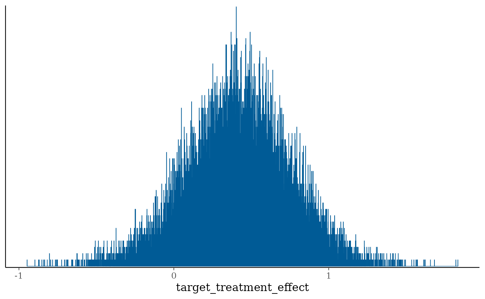
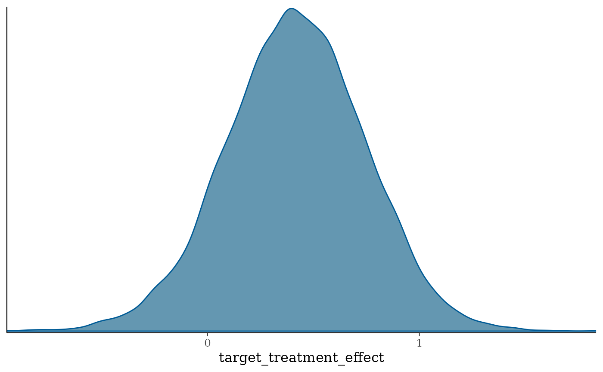
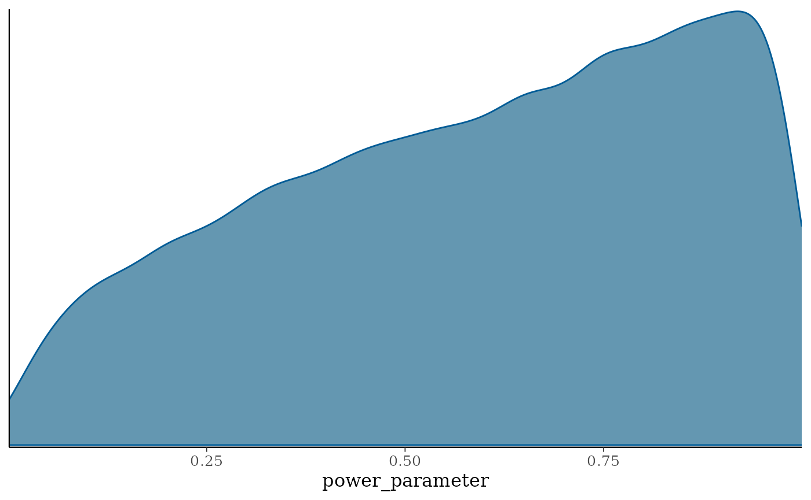
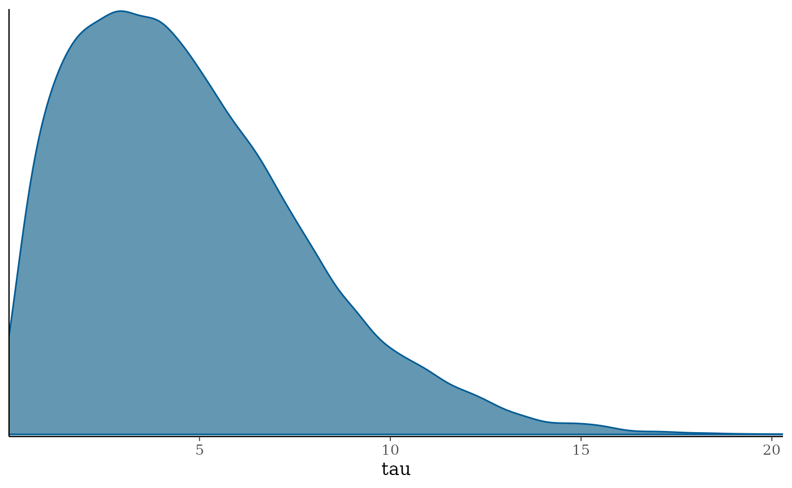
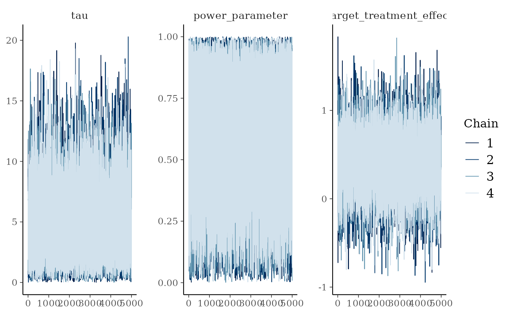
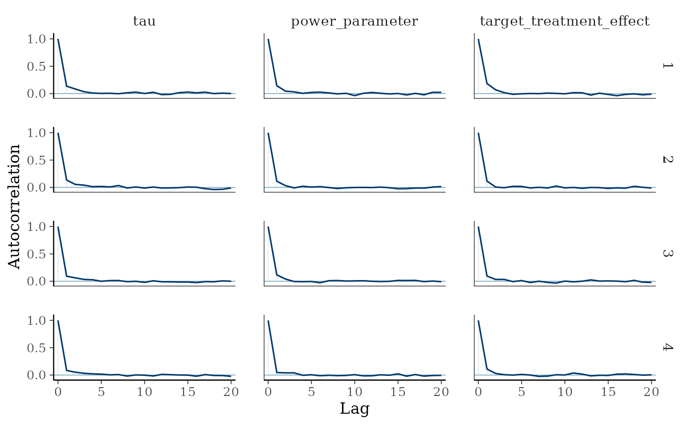

Commensurate Power Prior
Tristan Fauvel, Quinten Health & Daniel Lee
2026-09-11
Source:vignettes/methods/Commensurate_Power_Prior.Rmd
Commensurate_Power_Prior.RmdSet working directory, import functions and configurations
List packages to load, and install them if necessary.
Mathematical description of the model
The location commensurate power prior is given by Hobbs et al (2011):
where is an initial prior for . Note that, compared to equation (4) in Hobbs et al (2011), the prior differs slightly. Indeed, in this paper, the prior is omitted, and is misplaced.
Hobbs et al (2011) chose the following distributions:
and
where is a positive function of that is small for closed to zero and large for large values of .
When the evidence for commensurability is weak, is forced toward zero, increasing the variance of the commensurate prior for . So the amount of borrowing can be adapted in two ways: through the specification of , or .
Gaussian case
Hobbs et al (2011) show that, in the Gaussian likelihood case (equation 9):
where , and
Implementation of the model in Stan
case_study_config <- yaml::yaml.load_file(system.file("conf/case_studies/belimumab.yml", package = "RBExT"))
source_data <- ObservedSourceData$new(case_study_config)
summary_measure_likelihood <- case_study_config$summary_measure_likelihood
endpoint <- case_study_config$endpoint
target_data <- ObservedTargetData$new(treatment_effect_estimate = case_study_config$target$treatment_effect, treatment_effect_standard_error = case_study_config$target$standard_error, target_sample_size_per_arm = as.integer(case_study_config$target$total / 2), summary_measure_likelihood = case_study_config$summary_measure_likelihood)
method_parameters <- list(
initial_prior = "noninformative", # This corresponds to the fact that the posterior for the adults data is derived from an uninformative prior (for consistency with other methods). May be removed in future releases.
heterogeneity_prior = list(family = "inverse_gamma", alpha = 1 / 3, beta = 1) # list(family = "cauchy", location = 0, scale = 10)
# list(family = "half_normal", std_dev = 1)
)
method_parameters <- list(
initial_prior = "noninformative", # This corresponds to the fact that the posterior for the adults data is derived from an uninformative prior (for consistency with other methods). May be removed in future releases.
heterogeneity_prior = # list(family = "cauchy", location = 0, scale = 1)
list(family = "half_normal", std_dev = 5)
)
env = "full"
config_dir <- paste0(system.file(paste0("conf/", env), package = "RBExT"), "/")
mcmc_config <- yaml::read_yaml(paste0(config_dir, "/mcmc_config.yml"))
model <- Model$new()
model <- model$create(
case_study_config = case_study_config,
method = "commensurate_power_prior",
method_parameters = method_parameters,
source_data = source_data,
mcmc_config = mcmc_config
)
print(model$stan_model_code)## [1] "\n functions {\n real g_function(real log_tau) {\n return fmax(log_tau, 1); // Define g(τ)\n }\n }\n\n data {\n int<lower=0,upper=2> prior_type; // Type of prior on the commensurability parameter; 0 for inverse_gamma, 1 for half normal, 2 for Cauchy\n int<lower=1> NS; // Number of samples in dataset S\n int<lower=1> NT; // Number of samples in dataset T\n real<lower=0> target_sampling_variance; // Known variance of the target data\n real<lower=0> prior_variance; // Prior variance component\n real source_treatment_effect_estimate; // Estimate from dataset S\n real target_treatment_effect_estimate; // Estimate from dataset T\n real std_dev; // Parameter for the half normal prior\n real location; // Location parameter for the Cauchy prior\n real scale; // Scale parameter for the Cauchy prior\n real alpha; // Parameter for the inverse_gamma prior\n real beta; // Pocation parameter for the inverse_gamma prior\n }\n\n parameters {\n real<lower=0, upper=1> power_parameter; // Power parameter\n real<lower=0> tau; // Commensurability parameter\n real target_treatment_effect; // Target treatment effect\n }\n\n model {\n // Local to the model block: these are\n // intermediate quantities, and declaring\n // them as transformed parameters would\n // write three extra columns per draw to\n // the output CSV for no downstream use.\n // Stan does not allow constraints on\n // local declarations; both quantities are\n // non-negative by construction here.\n real u = power_parameter * NS + tau * prior_variance;\n real tau2 = tau^2;\n real log_tau = log(tau);\n real marginal_variance = target_sampling_variance / NT\n + 1 / tau\n + prior_variance / (power_parameter * NS);\n\n // Priors\n if (prior_type == 0) {\n tau2 ~ inv_gamma(alpha, beta);\n // tau is the parameter and tau2 is a transform of it, so this\n // statement needs the log Jacobian of tau -> tau^2, which is\n // log(2 * tau). Without it the prior is InvGamma(alpha + 0.5, beta).\n target += log(tau);\n } else if (prior_type == 1){\n // tau is the parameter itself, so Stan's own <lower=0> transform\n // already supplies the Jacobian and the truncation normalises it.\n tau ~ normal(0, std_dev) T[0, ];\n } else if (prior_type == 2){\n log_tau ~ cauchy(location, scale);\n // Log Jacobian of tau -> log(tau). Without it the prior is improper.\n target += -log_tau;\n }\n\n\n power_parameter ~ beta(g_function(log_tau), 1);\n\n // Marginal target-data likelihood for the borrowing\n // parameters. Together with the conditional distribution\n // below, this gives the joint posterior from equation (9)\n // of Hobbs et al. (2011). Omitting this term leaves tau and\n // power_parameter distributed according to their priors.\n target_treatment_effect_estimate ~ normal(\n source_treatment_effect_estimate,\n sqrt(marginal_variance));\n\n target_treatment_effect ~ normal(\n (power_parameter * NS * tau * target_sampling_variance * source_treatment_effect_estimate + NT * u * target_treatment_effect_estimate) /\n (power_parameter * NS * tau * target_sampling_variance + NT * u),\n sqrt((u * target_sampling_variance) / (power_parameter * NS * tau * target_sampling_variance + NT * u)));\n }\n "
model$inference(target_data)In the inference method, the data are prepared for use with Stan using:
# Prepare the data for MCMC inference
data <- model$prepare_data(target_data)Then, draws are sampled from the posterior following the configuration specified in mcmc_config.
bayesplot::mcmc_hist(model$fit$draws("target_treatment_effect"), binwidth = 0.001)
posterior <- model$fit$draws("target_treatment_effect")
bayesplot::color_scheme_set("blue")
bayesplot::mcmc_dens(posterior, pars = c("target_treatment_effect"))
Posterior distribution of the power parameter:
posterior <- model$fit$draws("power_parameter")
bayesplot::color_scheme_set("blue")
bayesplot::mcmc_dens(posterior, pars = c("power_parameter"))
Posterior distribution of the heterogeneity parameter:
posterior <- model$fit$draws("tau")
bayesplot::color_scheme_set("blue")
bayesplot::mcmc_dens(posterior, pars = c("tau"))
library(posterior)
draws_array <- as_draws_array(model$fit)
library(bayesplot)
mcmc_trace(draws_array, pars = c("tau", "power_parameter", "target_treatment_effect"))

mcmc_diagnostics <- model$fit$diagnostic_summary()
n_draws <- mcmc_config$chain_length * mcmc_config$num_chains
# MCMC Effective Sample Size
mcmc_ess <- bayesplot::neff_ratio(model$fit) * n_draws
mcmc_ess <- mcmc_ess[["target_treatment_effect"]]
print(mcmc_ess)## [1] 14670.31
bayesplot::neff_ratio(model$fit)## power_parameter tau target_treatment_effect
## 0.7412430 0.6586232 0.7335153
rhat_values <- bayesplot::rhat(model$fit)
rhat <- rhat_values["target_treatment_effect"]
print(rhat)## target_treatment_effect
## 1.000068
# number of divergences reported is the sum of the per chain values
n_divergences <- sum(mcmc_diagnostics$num_divergent)
print(n_divergences)## [1] 0